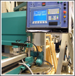

I We make extensive use of CAD technology, both in the production of drawings at an early stage of the process, through to computerised factory cutting and routing. This enables London Joinery to offer fast turn-round and competitively priced joinery products to development and construction clients; as well as private clients and public companies outside the construction sector.

I We often work with other companies within our industry to offer a complete service to clients who require a joinery or shopfitting led construction product.
I London Joinery in house team are able to respond quickly and provide sketches, budgets & quotations for any joinery item. If necessary we can engage fully qualified designers to produce more formally drawn proposals.